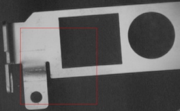

矩形生成工具是根据输入的左上点和右下点坐标生成矩形的操作。其实际生成的矩形如图1所示。

| 分类 | 参数名称 | 参数描述 |
|---|---|---|
| 属性窗口 | 是否拖动生成矩形 | 是否通过拖动方式生成矩形 |
| 矩形图形 | 输入左上点坐标值和矩形宽高 | |
| 图像窗口 | 无 | 无 |
| 数据链 | 左上点X | 输入左上点X轴坐标值，double类型。 |
| 左上点Y | 输入左上点Y轴坐标值，double类型。 | |
| 右下点X | 输入右下点X轴坐标值，double类型。 | |
| 右下点Y | 输入右下点Y轴坐标值，double类型。 | |
| 高级界面 | 无 | 无 |
| 分类 | 参数名称 | 参数描述 |
|---|---|---|
| 监视窗口 | 矩形结果 | 输出形成矩形的左上点坐标、宽度和高度。 |
| 执行结果 | 工具执行结果。 | |
| 执行时间 | 工具执行时间。 | |
| 图像窗口 | 矩形结果 | 显示生成的矩形，同监视窗口的矩形结果参数。 |
| 执行结果 | 显示工具执行结果，执行成功显示“OK”，执行失败显示“NG”，同监视窗口的执行结果参数。 | |
| 数据链 | 矩形结果 | 输出生成的矩形，供后序工具使用，同监视窗口的矩形结果参数。 |
无
参见“\Samples\形状间距及相关点.gvp”。